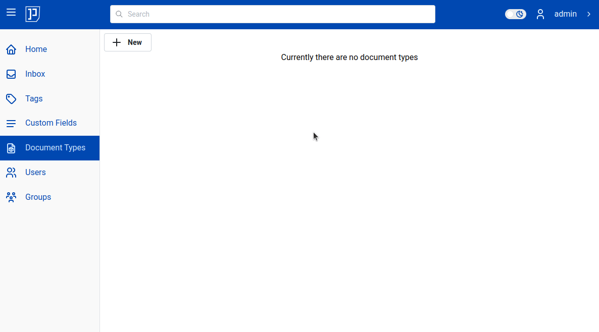

Path Templates
Imagine you've got couple of receipts from your customer in the inbox. They are in your inbox. But inbox is just temporary location, so you'll need to move documents to their "final destination" - target folder.
Or may you just want to upload couple of documents yourself. Still you need to decide where to place them.
Regardless which way documents end up in Papermerge DMS - every time you need to decide where you place them: which folder?
Target Folder
The question "what is the target folder for document X" may not seem like a big deal. And indeed - if you just do it for very first folder, only one time it is simple. But more your document base grows, more complex folder layout you have more vexed the question becomes. Especially if you do it say, onece a week.
More realistic scenario would be this: you work on your lovely project, you are fully focused on your project. You receive an invoice from your customer (we will refer to this customer - Coco). Now you decide to upload Coco's invoice into Papermerge DMS.
And... where should you place it?
Is it in /home/Customers/2024/coco/invoice-2024-01.pdf?
Or in /home/Invoices/2024/Customers/coco-2024-01.pdf?
Or maybe in /home/My Documents/invoices?
You see, we humans tend to forget. The question of the target folder is vexed one. It distracts you from your real tasks.
Path Templates
Meet path templates. The idea is simple: you need to decide where to place your receipts only once. Once you decide where you put to them - you write it down as "path template" and then all your receipts will automatically be placed to that path. Of course you can do that for any document type.
Basically, for each document type you create a "template" of
the place where documents of that type will be stored. And then Papermerge DMS
will use that information to move the document to the
target folder automatically  !
!
Info
Path templates are per document type. They create a "template" of where documents of that type will be placed. The path includes both target folder and file name.
Let's see couple of examples.
In first example, let's create document type "Receipt" and set its path
template to /home/My Documents/Receipts/:

Notice that path template ends with "/". If path ends with "/", it means that
the last part is a folder. We will come back to this point later.
Also please remark that there no My Documents folder; neither
Receipts folder is not there; both of them will be automatically created.
From now on, any document of type Receipt will be moved into /home/My Documents/Receipts/.
Let's see it in action. In video below initially document brother_004485.pdf is in inbox
and it has no document type assigned yet. Also, notice that in home there is no folder My Documents yet.
However, once brother_004485 is changed to type "Receipt" it is automatically moved from inbox
into its target folder designed by Receipt's path template: /home/My Documents/Receipts/.
It is very important that template path /home/My Documents/Receipts/ ends
with "/". It tells Papermerge DMS that target is a folder. If we would
change it to /home/My Documents/coco, then Papermerge DMS would move
brother_004485.pdf into target folder My Documents and rename file from
brother_004485.pdf to coco.
Info
Path templates ending in "/" designates a folder. Any other ending means last part of the path is document name.
Examples:
- /home/coco - target folder is
homeand file will be renamed tococo - /home/Clients/CocoInc/invoice.pdf - target folder is
CocoIncand file will be renamed toinvoice.pdf - /home/Clients/CocoInc/ - target
CocoInc- a folder. Documents will be moved into/home/Clients/CocoInc/folder
Target Root
In all examples above, path template, started with /home. Actually you can omit /home part as it is
always implicit. Thus following paths are equivalent:
- /home/Invoices/Clients/
- /Invoices/Clients/
- Invoices/Clients/
Info
Template path root folder is always assumed to be user's home folder
Thus, if you set template path as Toto/ - it will move documents of respective type into /home/Toto/ folder.
If you set template path to /inbox/Toto/ - it will move documents of respective type into /home/inbox/Toto/ folder.
Tip
Always start you path templates target folders with /home/
Following table is a summary of cases described so far:
| Path Template | Document Title | Evaluation Outcome |
|---|---|---|
| /home/Clients/Invoices/ | bon.pdf | /home/Clients/Invoices/bon.pdf |
| /home/Clients/Invoices | bon.pdf | /home/Clients/Invoices |
| /Letters/Misc/ | zdf-love.pdf | /home/Letters/Misc/zdf-love.pdf |
| Letters/Misc/ | zdf-love.pdf | /home/Letters/Misc/zdf-love.pdf |
| /inbox/Taxes/ | 2021.pdf | /home/inbox/Taxes/2021.pdf |
Jinja2 Syntax
Path templates use so called jinja templates syntax. Using jinja syntax you can mix into template different attributes known at evaluation time (when template is evaluated for that specific document). An example:
/home/Invoices/Misc/{{ document.id }}-{{ document.title }}.pdf
The part between curly braces is evaluated for each document.
{{ document.id }}
will be replaced with document's ID. And
{{ document.title }}
with document's title. document within curly braces is contextual object; it can reference
current document' attributes using document.<name of attribute> notation.
You can use if statements:
{% if document.id %}
/home/My Documents/Invoices/{{ document.id }}.pdf
{% else %}
/home/My Documents/Invoices/
{% endif %}
Object document has following attributes:
- id
- title
- cf
- has_all_cf
Via cf object you can access custom fields values. has_all_cf is true if
and only if all all document's custom fields have non-empty values.
Examples:
{% if document.has_all_cf %}
/home/Receipts/{{ document.cf['Shop'] }}-{{document.cf['Effective Date']}}.pdf
{% else %}
/home/Receipts/{{ document.id }}.pdf
{% endif %}
The template above reads: if document has all custom fields filled with non empty values, then use Shop, Effective Date custom fields to build its path, otherwise use only document id to build it's path. Using document ID is safety measure, because document's ID attribute is always defined.
Warning
Inside square brackets you must reference custom fields using custom fields names together with their spaces and their case.
If field name is "Total (EUR)", then you reference it with
{{ document.cf['Total (EUR)'] }}
There is one space between word "Total" and "(EUR)". Word "Total" must be capital case (same case as custom field name).